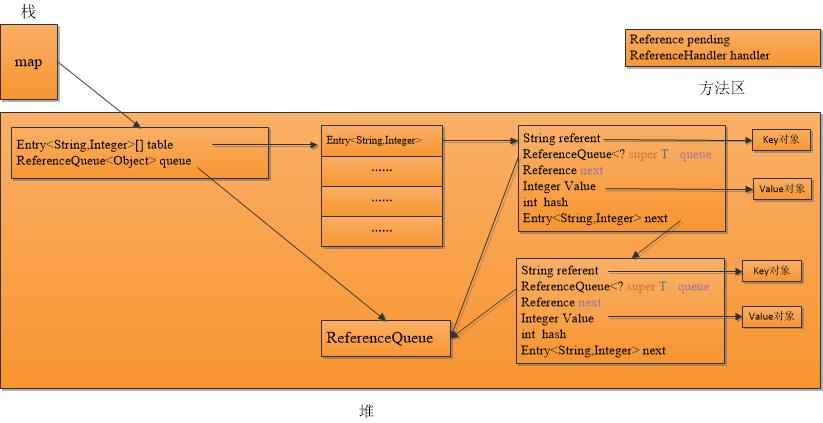

前言
在学习WeakReference的时候，自然想去看看JDK自带的WeakHashMap原理，于是在网上看到了这样一篇文章《WeakHashMap的神话》,这个题目很有噱头，也激起了广大码农的积极讨论，但是意见不统一，我当然也不甘寂寞，所以决定一探究竟。
代码与内存数据分布图
下面是一个小demo和数据的大致内存分布（当然只是关键数据，主要方便描述）
示例代码
1 | public void WeakHashMapTest() throws InterruptedException{ |
数据的内存分布

核心类与代码
- WeakHashMap
与HashMap有两点不一样：1）WeakHashMap的Entry<K,V>除了实现了Map.Entry<K,V>接口，还继承了WeakReference<Object>类； 2）WeakHashMap包含了一个引用队列ReferenceQueue, 主要用来填充Reference,即WeakHashMap的Entry<K,V>。 Entry<K,V>
Entry<K,V>继承自父类的父类Reference的几个成员变量和类变量：K referent, Reference next, ReferenceQueue queue, Reference pengding, ReferenceHandler thread,以及本身的 int hash,V value和Entry<K,V> next；- K referent 即WeakHashMap中的key，虽然是一个强引用，但是会被JVM特殊处理，即如果该字段的所属类是WeakReference，且它指向的实例没有别被其他GC Roots引用, 则referent会被JVM GC时置NULL，且对应指向的实例内存空间将被回收，然后将所对应的引用Entry<K,V>加入到pengding链表。
private T referent; / Treated specially by GC /
- Reference next 指向下一个Reference,主要用于pengding链表的构建
- Reference queue 在同一个WeakHashMap实例中，所有的Entry中的queue都是一样，即WeakHashMap的成员变量queue
- Reference pending 是一个类变量，也是一个单向链表，JVM将key对应的实例GC后，会将对应的Entry(Reference)加到pending链表, 然后等待ReferenceHandler线程的处理，由于还有有GC线程的添加操作，所以需要加锁处理。
List of References waiting to be enqueued. The collector addsReferences to this list, while the Reference-handler thread removes them. This list is protected by the above lock object.
private static Reference pending = null;
ReferenceHandler thread 是一个类变量， 是一个优先级最大的守护线程，当JVM添加一个Entry(Reference)到pending链表时，会唤醒该线程，然后根据该Reference的状态，来决定是不是进入队列或者其他操作，对于WeakHashMap而言，当然是全部进入queue中（enqueue方法)
1
2
3
4
5
6
7
8
9
10
11
12
13
14
15
16
17
18
19
20
21
22
23
24
25
26
27
28
29
30
31
32
33
34
35private static class ReferenceHandler extends Thread {
ReferenceHandler(ThreadGroup g, String name) {
super(g, name);
}
public void run() {
for (;;) {
Reference r;
synchronized (lock) {
if (pending != null) {
r = pending;
Reference rn = r.next;
pending = (rn == r) ? null : rn;
r.next = r;
} else {
try {
lock.wait();//等待JVM其他线程唤醒
} catch (InterruptedException x) { }
continue;
}
}
// Fast path for cleaners
if (r instanceof Cleaner) {
((Cleaner)r).clean();
continue;
}
ReferenceQueue q = r.queue;
if (q != ReferenceQueue.NULL) q.enqueue(r);
}
}
}int hash 用来保存key对象的hash值（非常有必要保存，后面代码中会讲到）
- V value WeakHashMap对应的Value值，是一个强引用，但是不会被JVM特殊处理，这是与referent不一样的地方
- Entry<K,V> next 与HashMap中的作用一样，主要用来解决hash冲突的
- K referent 即WeakHashMap中的key，虽然是一个强引用，但是会被JVM特殊处理，即如果该字段的所属类是WeakReference，且它指向的实例没有别被其他GC Roots引用, 则referent会被JVM GC时置NULL，且对应指向的实例内存空间将被回收，然后将所对应的引用Entry<K,V>加入到pengding链表。
回收流程分析
如果一个WeakHashMap构建好，并且put一些key,value进去以后，如果这些key没有被其他地方引用，下一次GC来临时，将会发生什么呢，看看下面的流程:
- JVM GC时，发现Entry<K,V>对象的是WeakReference对象时，会对key(即referent）做特殊处理，切断key的引用（key=null),回收key所指向的实例，并把Entry<K,V>加入到类变量的pengding列表， 唤醒ReferenceHandler线程；
- ReferenceHandler线程，根据逻辑判断，会把Entry<K,V>对象，加入到Entry<K,V>对象成员变量queue所指向的引用队列（enqueue)；
- 如果接下来还有该WeakHashMap实例对应的方法调用， 就会触发 expungeStaleEntries()的执行(每个对外方法都有直接或间接调用)，该方法会把value的引用置NULL，并将Entry<K,V>移出WeakHashMap，这时才有机会回收Value所指向的实例的内存空间。
1
2
3
4
5
6
7
8
9
10
11
12
13
14
15
16
17
18
19
20
21
22
23
24
25
26
27
28
29
30
31
32
33
34
35private void expungeStaleEntries() {
for (Object x; (x = queue.poll()) != null; ) {
synchronized (queue) {
("unchecked")
Entry<K,V> e = (Entry<K,V>) x;
/**
计算散列到槽的位置，其实就是e.hash % table.length的位运算
（e.hash & (table.length -1)，这也是为啥Entry[] talbes
大小必须是2的指数次方的原因), e.hash是根据key的实例计算出来的，
但是此时，key所指向的实例已被回收，所以，这也是为啥要保存hash值的
原因。
**/
int i = indexFor(e.hash, table.length);
Entry<K,V> prev = table[i];
Entry<K,V> p = prev;
while (p != null) {
Entry<K,V> next = p.next;
if (p == e) {
if (prev == e)
table[i] = next;
else
prev.next = next;
// Must not null out e.next;
// stale entries may be in use by a HashIterator
e.value = null; // Help GC 这个时候才有可能回收value
size--; //Entry<K,V>移出链表，size--, 但是table长度不变
break;
}
prev = p;
p = next;
}
}
}
}
有趣实验
代码：JVM
1
2
3
4
5
6
7
8
9
10
11
12
13
14
15
16
17
18
19
20
21
22
23
24
25
26
27
28
29
30
31
32
33
34
35
36
37
38
39
40
41
42
43
44
45
46
47
48
49
50
51
52
53
54
55
56
57
58
59
60
61
62
63
64
65
66
67
68
69
70
71
72
73
74
75
76
77
78
79
80
81
82
83
84
85
86
87
88
89
90
91
92
93
94
95
96
97
98
99
100
101
102
103
104
105
106
107
108
109
110
111
112
113
package com.sbwei.gc;
import java.util.ArrayList;
import java.util.List;
import java.util.WeakHashMap;
/**
* VM args: -Xms20m -Xmx20m
* @author sbwei
*/
public class WeakHashMapGC {
private final static int _1M = 1024*1024;
private static void testOne(){
List<WeakHashMap<byte[], byte[]>> list = new ArrayList<>();
for (int i = 0; i < 20; i++) {
WeakHashMap<byte[], byte[]> map = new WeakHashMap<>();
map.put(new byte[_1M], new byte[2 * _1M]);
list.add(map);
System.out.println(i);
System.gc();
try {
Thread.sleep(500);
} catch (InterruptedException e) {
e.printStackTrace();
}
}
}
private static void testTwo(){
List<WeakHashMap<byte[], byte[]>> list = new ArrayList<>();
for (int i = 0; i < 20; i++) {
WeakHashMap<byte[], byte[]> map = new WeakHashMap<>();
map.put(new byte[_1M], new byte[2 * _1M]);
list.add(map);
System.out.print(i + ":");
for (int j = 0; j < i; j++) {
System.out.print(list.get(j).size() + " ");
}
System.out.println();
System.gc();
try {
Thread.sleep(500);
} catch (InterruptedException e) {
e.printStackTrace();
}
}
}
private static void testThree(){
List<WeakHashMap<byte[], byte[]>> list = new ArrayList<>();
for (int i = 0; i < 20; i++) {
WeakHashMap<byte[], byte[]> map = new WeakHashMap<>();
map.put(new byte[_1M], new byte[2 * _1M]);
list.add(map);
System.out.println(i + ":" + map.size());
System.gc();
try {
Thread.sleep(500);
} catch (InterruptedException e) {
e.printStackTrace();
}
}
}
private static void testFour(){
List<WeakHashMap<byte[], byte[]>> list = new ArrayList<>();
for (int i = 0; i < 20; i++) {
WeakHashMap<byte[], byte[]> map = new WeakHashMap<>();
map.put(new byte[_1M], new byte[2 * _1M]);
list.add(map);
System.gc();
System.out.println(i + ":" + map.size());
try {
Thread.sleep(500);
} catch (InterruptedException e) {
e.printStackTrace();
}
}
}
private static void testFive(){
List<WeakHashMap<byte[], byte[]>> list = new ArrayList<>();
for (int i = 0; i < 20; i++) {
WeakHashMap<byte[], byte[]> map = new WeakHashMap<>();
map.put(new byte[_1M], new byte[2 * _1M]);
list.add(map);
System.gc();
try {
Thread.sleep(500);
} catch (InterruptedException e) {
e.printStackTrace();
}
System.out.println(i + ":" + map.size());
}
}
public static void main(String[]args) {
if(args.length == 0){
System.err.println("Usage: Java WeakHashMapGC <[0,4]>");
System.exit(-1);
}
Integer i = 0; //默认0
try {
i = Integer.parseInt(args[0]);
}catch(NumberFormatException e){
}
switch (i){
case 0: testOne();break;
case 1: testTwo();break;
case 2: testThree();break;
case 3: testFour();break;
case 4: testFive();break;
default:
System.err.println("param is not a Integer in [0,4]");
}
}
}
结果估计
可以根据自己的理解估计一下实验结果，我是事后孔明哈，结果毕竟我都验证过了，注意System.gc()是由一个优先级极低的线程执行的，所以需要在代码中主线程sleep(500), 以尽量（比如99.9%）保证gc()执行。
实验一估计
堆的大小是20m, 每个map只有一个Entry, key为1M, value 2M， 由于在put之后，再也没该map的方法调用（第一次put中，expungeStaleEntries方法其实是无用功），所以估计key值空间能回收，value值空间不会，考虑到而外开销，所以循环次数应大于6.67（20/3）次, 小于10次20/2，就会OOM实验二估计
实验二与实验一不同的地方是，除了最后一个map，每个map都至少碰到两次gc, 在调用put方法后， 第一轮gc，释放key对象空间，Entry入队列， 下一轮又调用了size（）方法，所以到第二轮gc，除了释放本轮的key对象空间，还是释放了上轮的value对象空间，所以堆大小不会超过2M+附加空间，从而不会溢出。实验三估计
实验三与实验二不同的地方是，在map调用put方法之后，马上调用size方法，中间没有gc, 在size执行前，key值并没被回收，所以Entry也不会入队，所以size（）大小还是1，value也不会置空，第一轮gc
只是回收key对象空间，第二轮gc时由于上轮value没有被置空，所以value并不会被回收，所以结果和实验1一样，在（6.67,10）次循环就会溢出实验四估计
实验四与实验三不同的地方是，size()方法放到了system.gc()后执行， 但是由于system.gc()执行优先级低，所以结果不确定，也有溢出的可能。实验五估计
实验五与实验四不用的地方是，size()方法放到了System.gc()后执行，并且能尽量保证在gc后执行size（）, 所以实验五的结果和实验二一样，不会产生溢出。
实际运行结果
1 | //实验一： 前8次正常，第9次OOM |
总结
- WeakHashMap只有key值会在JVM GC时Treated specially， value并不会;
- WeakHashMap对外提供的方法，都直接或者间接调用了expungeStaleEntries()， 该方法会将value对应的引用置空（help GC)，实验是一些极端的例子，主要是帮助理解WeakHashMap，正常情况下是不太会出现OOM的。